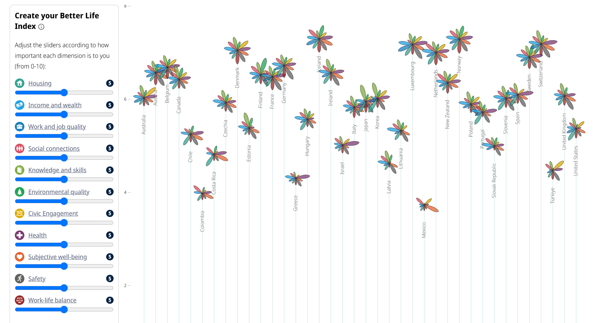
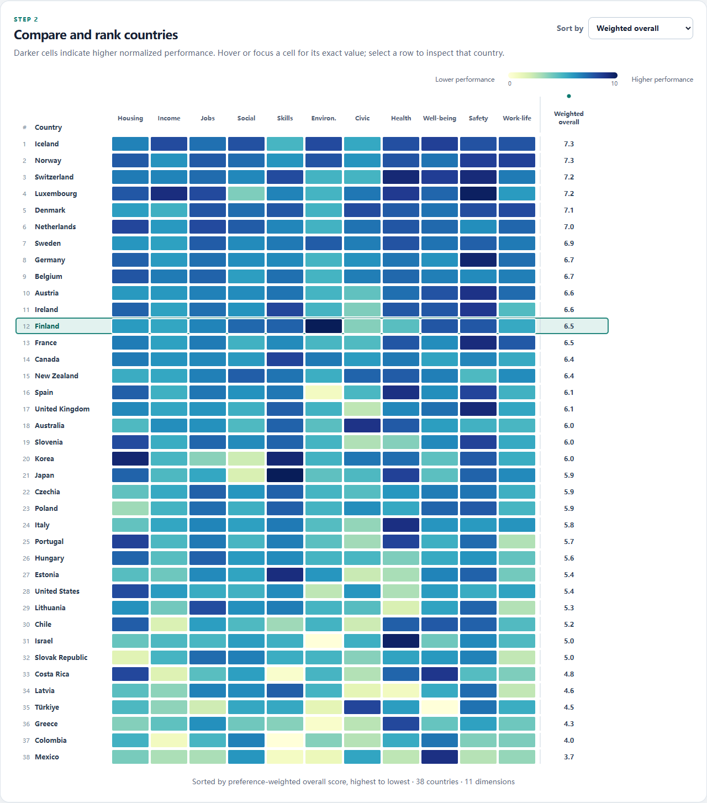

OECD Better Life Index
An aligned heatmap makes ranking and comparison easier across 38 countries and 11 dimensions
Original flower chart

Redesign: sortable heatmap

Performance remains visible in the cells. Priority sliders affect only the weighted overall score, while the detail plot uses one common 0–10 scale.